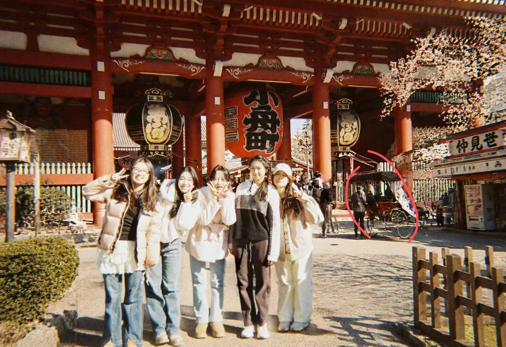

Scene I: The Origin
关于拂烟

"Here's to the ones who dream..."
Take One
The Protagonist
嗯为什么要放这张图呢，本来我是想放关于我推的照片的，但实在可惜本人是一个热度消失极快的人，而频繁改照片违背了我偷懒的底层代码，因此决定放一张三次世界的梦核照片，毕竟我推很快会改变，但回忆永远就是站在那儿，看着自己越离越远。
兴趣方向
嗯，兴趣，取决于我这周抖音刷到了什么（）。
希望自己会吹笛子然后在不夜城和仙门百家大战三百回合，希望自己会跳hip-hop然后迷倒万千少女，希望自己很会赚钱然后不经意在别人旁边发出老钱笑...
对，大概就这样，（留下一个欧亨利式结尾然后离开）
“
保持热爱，奔赴山海。
”